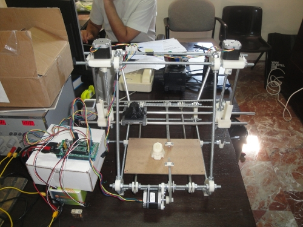

Hoy he terminado de montar el eje x de
mi impresora clónica… por lo que ya están todos los ejes funcionando!
En este vídeoo podéis ver al clon en acción, realizando una impresión “en vacío”
(Todavía no tengo el extrusor)


3 thoughts on “Clone wars: Todos los ejes de mi clon están funcionando!!”
Comments are closed.
Me encanta!!! Que envidia no estar por allí para verlo en persona!!!
Hola como podria ponerme en contacto con vosotros para construir una reprap en bilbao, gracias
Hola Ivan,
Perdona que haya tardado en contestarte. La página del proyecto es:
http://asrob.uc3m.es/index.php/Proyecto:_Clone_wars
Nos comunicamos a través del grupo de google que allí se indica. Apúntate y así podréis estar en contacto con todos nosotros